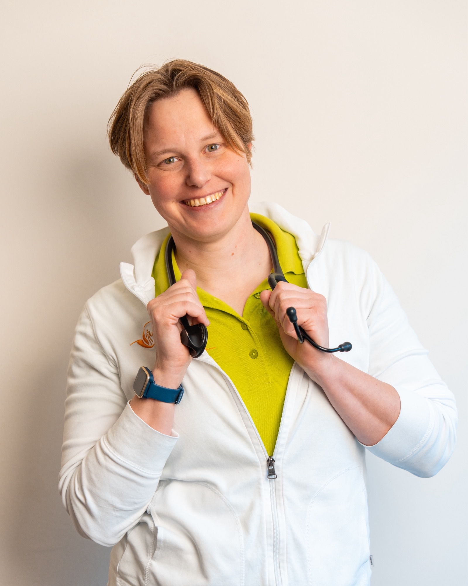
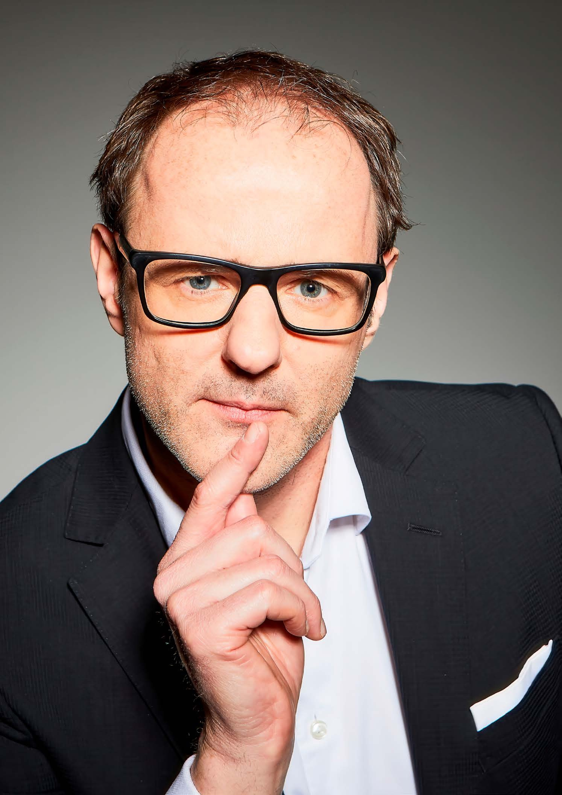
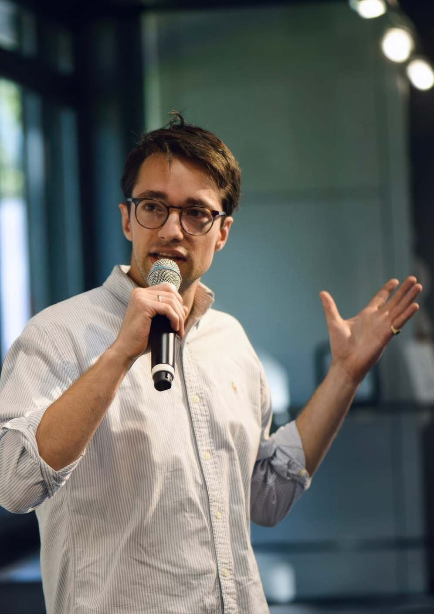
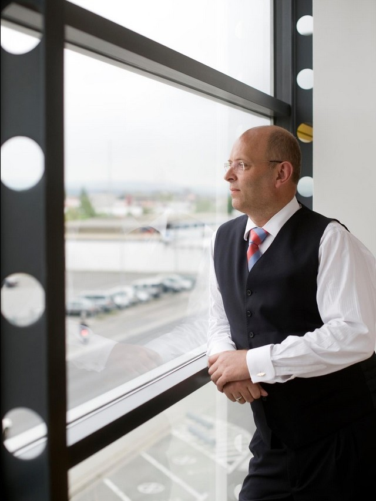
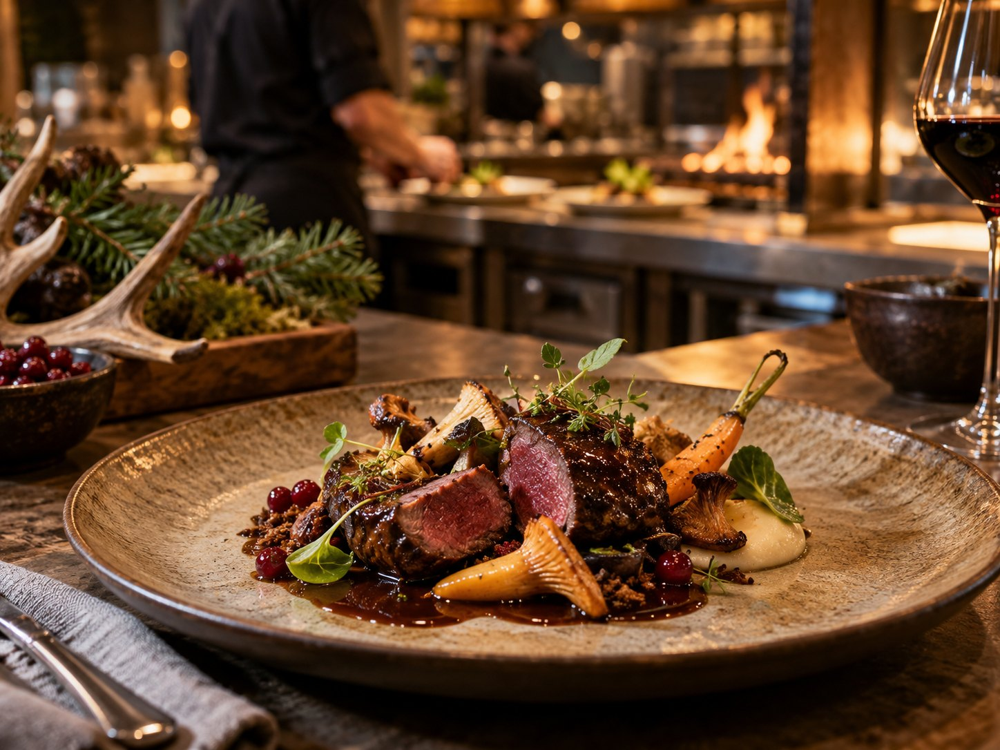
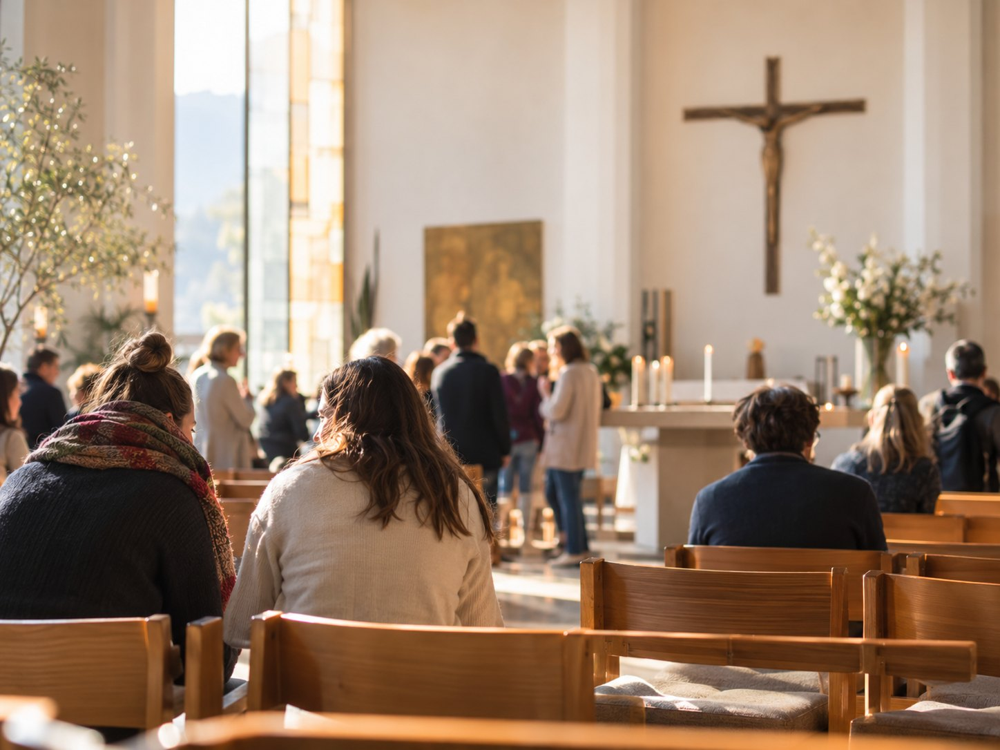
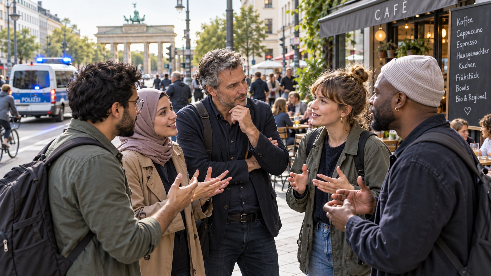

„Wir müssen uns als Gesellschaft ehrlich machen“
Dr. Laura Dalhaus
Ein Gespräch über ein Gesundheitswesen an der Belastungsgrenze, politische Reformfähigkeit, Eigenverantwortung und die Frage, wie viel Kritik große Institutionen aushalten müssen.

Empfohlen

„Ich glaube, dass die Leute sich gerne für etwas begeistern lassen.“

„Auch ich kenne keine Welt ohne soziale Medien.“
Aktuelle Gespräche

„Wir verwalten das Problem, statt es zu lösen“
Ein Gespräch über junge Menschen ohne Schulabschluss, die Folgekosten verschenkter Bildung und eine Hilfe, die früher ansetzen muss.

Vom Wald auf den Teller – Timo und Emely Böckle über Jagd, Handwerk und Genuss
Ein Gespräch über das Restaurant WILD, die Verantwortung des Jägers und ehrliches Handwerk vom Wald bis auf den Teller.

„Der Staat muss liefern – oder er verliert seine Legitimation“
Ein Gespräch über sein Buch „Der Preis unserer Toleranz“, innere Sicherheit als soziale Frage und einen Rechtsstaat, der durchsetzt, was er beschlossen hat.

Frieden beginnt im Kleinen
Ein Gespräch über Project Peacemaker, Respekt im Polizeialltag und die Grenzen dessen, was Dialog bewirken kann.

Kirche als Zuhause
Ein Gespräch über die HOME Church in Salzburg, eine tragfähige Sonntagskultur und eine Kirche, die von vielen Schultern getragen wird.

Demokratie ist keine Harmoniemaschine
Ein Gespräch über Streit als Normalfall, über Verfahren statt Willkür und darüber, warum Ausgrenzung Konflikte härter macht.
Erfahre, sobald neue Gespräche da sind.
Alle zwei Wochen das jüngste Gespräch, kurz eingeordnet. Kein Spam.